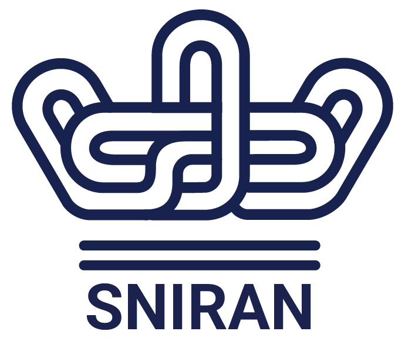
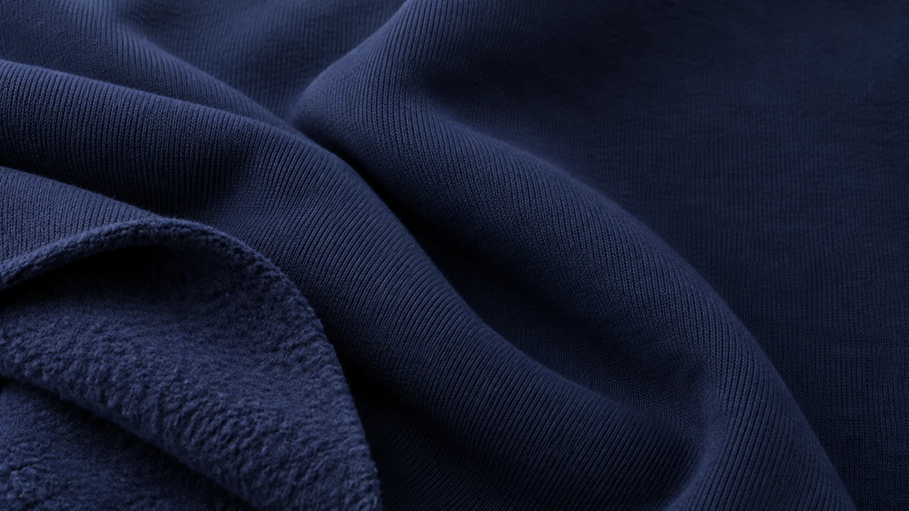
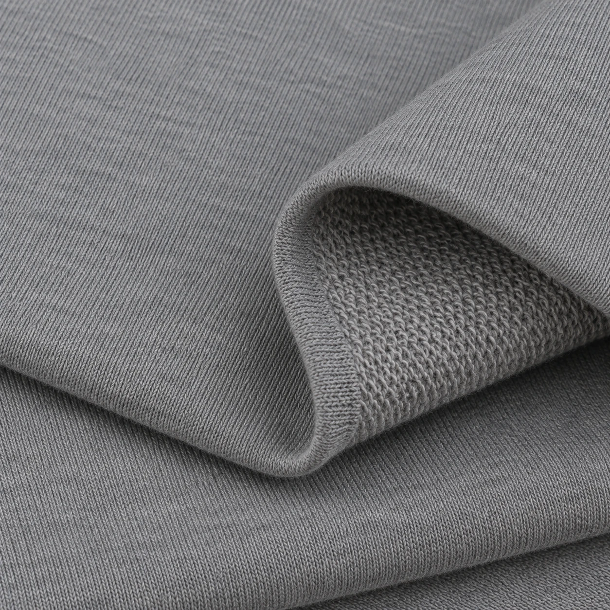

Soft from the first touch
A soft brushed reverse, with a warm, comfortable feel against the skin.

ShahnakhSHAHNAKH فا Work with usDiscover the texture, softness and drape.
Your brand’s next chapter starts here.

For clothing remembered by its touch.
Discover the softness of three-thread brushed fleece.
Fabric gives clothing its character. At Shahnakh, quality texture and a beautiful feel meet a world of colours, ready for your ideas.
Let’s talk about your fabric needsA soft brushed reverse, with a warm, comfortable feel against the skin.
Quality fabrics for thoughtfully made clothing.
Explore a range of palettes to find a colour that tells your story.
From calming blue to confident crimson,
discover possibilities for every idea.
Tap a colour to try it.
Choose a colour or enter one of the 12 suggested Pantone codes.
Move across the image, drag, or use the arrow keys to explore while zoomed in.

Tell us about your brand.
Get in touch to explore the right fabric for your needs.
Meet us at the Iran Textile & Fabric Exhibition. Explore colours, feel the textures and talk with us about what your brand needs.
Get in touch with Shahnakh Iran Textile & Fabric Exhibition